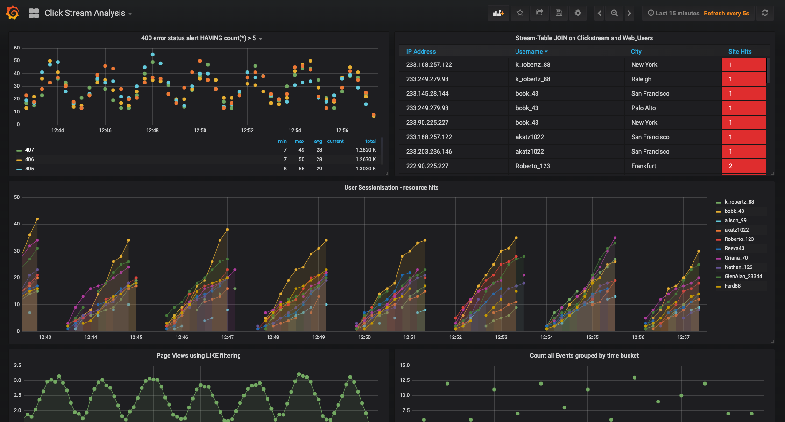

Understand user behavior with clickstream data
Analyzing clickstream data enables businesses to understand the behavior of its online users, for example:
- User activity over a given time frame: how many webpages are users viewing
- Requests that end in error, over a given threshold (e.g., 404 HTTP codes)
- Where the requests are coming from geographically in a given window of time
- How long users are interacting with the site (user sessions)

Step by step
Set up your environment
Setup your environment in Confluent Cloud, a fully-managed Apache Kafka® service.
Once your Confluent Cloud cluster is available, create a ksqlDB application. ksqlDB supports a SQL language for processing the data in real-time (and will soon support connector integration for reading and writing data to other data sources and sinks). Execute the recipe with the provided SQL commands using the Confluent Cloud ksqlDB editor.
Read the data in
Confluent Cloud offers pre-built, fully managed connectors that make it easy to quickly connect to popular data sources and end systems in the cloud. This recipe shows some example data sources, but you can substitute your own connectors to connect to any supported data source. The principles are the same, just modify the connector configuration shown below to fit your situation (see documentation).
To run a fully managed connector to source data into Kafka, use the Confluent Cloud Console or Confluent CLI command confluent connect create --config <file>. Each connector must be created separately.
This recipe creates simulated data with the Datagen connector.
{
"connector.class" : "DatagenSource",
"kafka.topic" : "clickstream_users",
"quickstart" : "clickstream_users",
"maxInterval" : "10",
"format" : "json",
"key.converter" : "org.apache.kafka.connect.converters.IntegerConverter"
}
{
"connector.class" : "DatagenSource",
"kafka.topic" : "clickstream",
"quickstart" : "clickstream",
"maxInterval" : "30",
"format" : "json"
}
Optional: To simulate a real-world scenario where user sessions aren't just always open but do close after some time, you can pause and resume the DATAGEN_CLICKSTREAM connector.
Run the stream processing app
Now you can process the data in a variety of ways by enriching the clickstream data with user information, analyze errors, aggregate data into windows of time, etc.
NOTE: The Confluent Cloud Console does not allow you to execute this code in the ksqlDB editor as a single block. This limitation will be removed in the next release, but until then, copy and paste each statement into the editor and execute them one at a time.
-- stream of user clicks:
CREATE STREAM clickstream (
_time bigint,
time varchar,
ip varchar,
request varchar,
status int,
userid int,
bytes bigint,
agent varchar
) WITH (
kafka_topic = 'clickstream',
value_format = 'json',
partitions = 6
);
-- users lookup table:
CREATE TABLE WEB_USERS (
user_id int primary key,
registered_At BIGINT,
username varchar,
first_name varchar,
last_name varchar,
city varchar,
level varchar
) WITH (
kafka_topic = 'clickstream_users',
value_format = 'json',
partitions = 6
);
-- Build materialized stream views:
-- enrich click-stream with more user information:
CREATE STREAM USER_CLICKSTREAM AS
SELECT
userid,
u.username,
ip,
u.city,
request,
status,
bytes
FROM clickstream c
LEFT JOIN web_users u ON c.userid = u.user_id;
-- Build materialized table views:
-- Table of html pages per minute for each user:
CREATE TABLE pages_per_min AS
SELECT
userid as k1,
AS_VALUE(userid) as userid,
WINDOWSTART as EVENT_TS,
count(*) AS pages
FROM clickstream WINDOW HOPPING (size 60 second, advance by 5 second)
WHERE request like '%html%'
GROUP BY userid;
-- User sessions table - 30 seconds of inactivity expires the session
-- Table counts number of events within the session
CREATE TABLE CLICK_USER_SESSIONS AS
SELECT
username as K,
AS_VALUE(username) as username,
WINDOWEND as EVENT_TS,
count(*) AS events
FROM USER_CLICKSTREAM window SESSION (30 second)
GROUP BY username;
-- number of errors per min, using 'HAVING' Filter to show ERROR codes > 400 where count > 5
CREATE TABLE ERRORS_PER_MIN_ALERT AS
SELECT
status as k1,
AS_VALUE(status) as status,
WINDOWSTART as EVENT_TS,
count(*) AS errors
FROM clickstream window HOPPING (size 60 second, advance by 20 second)
WHERE status > 400
GROUP BY status
HAVING count(*) > 5 AND count(*) is not NULL;
-- Enriched user details table:
-- Aggregate (count&groupBy) using a TABLE-Window
CREATE TABLE USER_IP_ACTIVITY WITH (key_format='json') AS
SELECT
username as k1,
ip as k2,
city as k3,
AS_VALUE(username) as username,
WINDOWSTART as EVENT_TS,
AS_VALUE(ip) as ip,
AS_VALUE(city) as city,
COUNT(*) AS count
FROM USER_CLICKSTREAM WINDOW TUMBLING (size 60 second)
GROUP BY username, ip, city
HAVING COUNT(*) > 1;
Write the data out
After processing the data, send it to Elasticsearch.
{
"connector.class" : "ElasticsearchSink",
"name" : "recipe-elasticsearch-analyzed_clickstream",
"input.data.format" : "JSON",
"kafka.api.key" : "<my-kafka-api-key>",
"kafka.api.secret" : "<my-kafka-api-secret>",
"topics" : "USER_IP_ACTIVITY, ERRORS_PER_MIN_ALERT",
"connection.url" : "<elasticsearch-URI>",
"connection.user" : "<elasticsearch-username>",
"connection.password" : "<elasticsearch-password>",
"type.name" : "type.name:kafkaconnect",
"key.ignore" : "true",
"schema.ignore" : "true"
}
Cleanup
To clean up the ksqlDB resources created by this recipe, use the ksqlDB commands shown below (substitute stream or topic name, as appropriate).
By including the DELETE TOPIC clause, the stream or table's source topic is also deleted, asynchronously.
DROP STREAM IF EXISTS <stream_name> DELETE TOPIC;
DROP TABLE IF EXISTS <table_name> DELETE TOPIC;
If you also created connectors, you'll need to remove those as well.